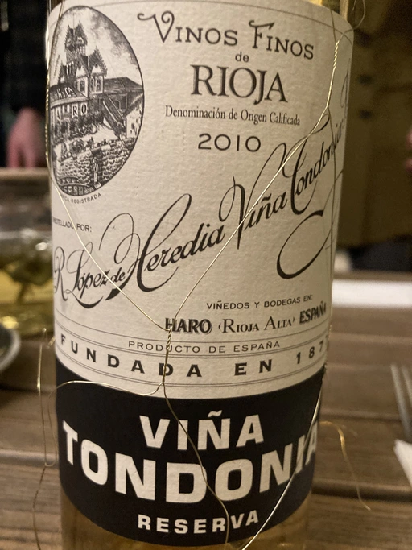
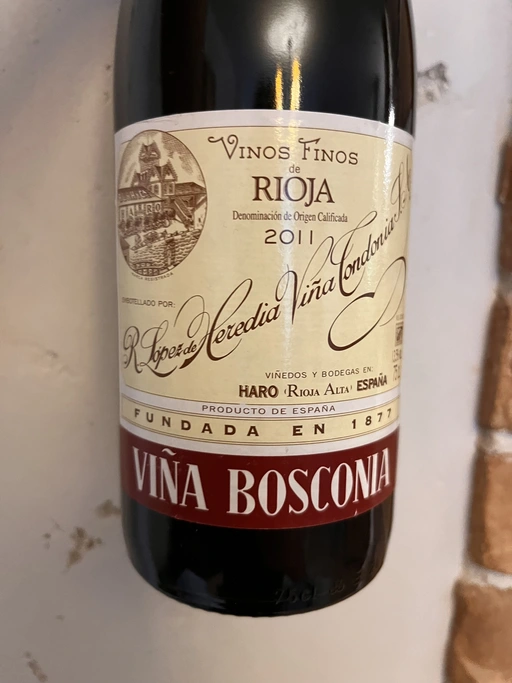
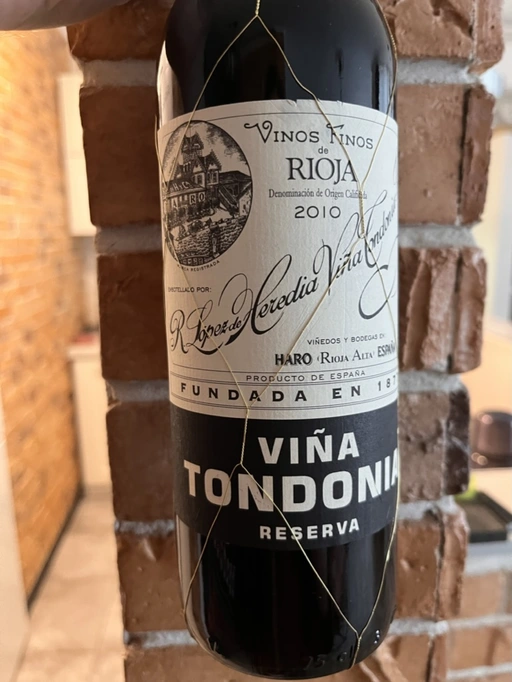
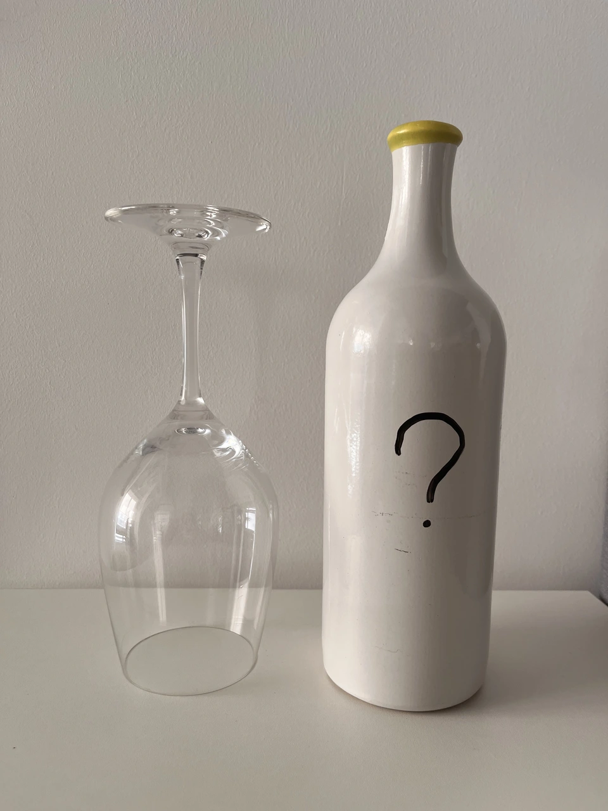
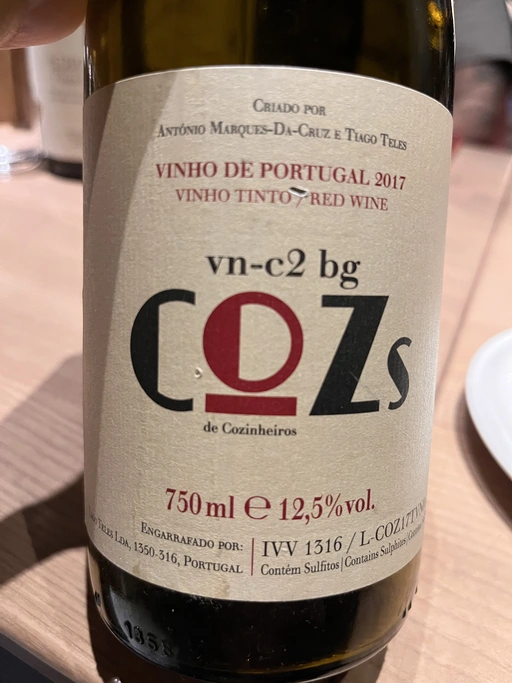
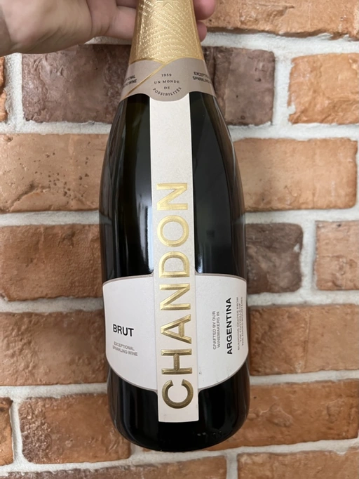

- Type
- White Still, Dry
- Producer
- R. López de Heredia
- Vintage
- 2009
- Location
- Spain, Rioja DOC
- Grapes
- Macabeo, Malvasia di Candia Aromatica
- Alcohol
- 12.5
- Sugar
- 2.5
- Price
- 2000 UAH, 1200 UAH
- Cellar
- N/A
Ratings
2021-07-06 - 9.00
Wonderful and unique white Rioja. Oxidative notes, bread with butter, white plum, flowers, grapefruit, smoke and nuts. Complex and perfectly balanced wine. It’s beautiful.
2022-06-07 - 9.00
Tasted blind. Since the list of white wines was known to me, the guess is obvious here. Unique and amazing style. Oxidative notes, bread and butter, baked apples, honey, nuts and mushrooms. It even has notes of flowers and grapefruit. Complex and well balanced with right volume and long aftertaste. IMO it lacks evolution, but amazing aftertaste with flavours of mushrooms, apples and honey. Happy to taste it again in almost a year.
Wine #2 on a blind tasting event by Vasyl Kalinichenko in 101 Bar.
Related

R. López de Heredia
Viña Tondonia Blanco Reserva - 2010

R. López de Heredia
Viña Gravonia Blanco Crianza - 2014

R. López de Heredia
Bosconia Reserva - 2011

R. López de Heredia
Viña Tondonia Tinto Reserva - 2010

R. López de Heredia
Viña Tondonia Tinto Reserva - 2007

R. López de Heredia
Cubillo Crianza - 2014

R. López de Heredia
Viña Tondonia Blanco Gran Reserva - 2001

R. López de Heredia
Viña Tondonia Rosé Gran Reserva - 2010

R. López de Heredia
Viña Tondonia Blanco Reserva - 2008

R. López de Heredia
Viña Tondonia Blanco Reserva - 2011

R. López de Heredia
Viña Gravonia Blanco Crianza - 2013

COZs
vn-c2 bg - 2017

Zidarich
Vitovska - 2015

Chandon
Argentina Brut - NV

Sadie Family
Pofadder - 2020

Lenkey Pinceszet
Betsek Korposd Furmint - 2011

Simon Bize et Fils
Bourgogne Les Perrières - 2017

J.M Dreyer
Elios Pinot Noir - 2020